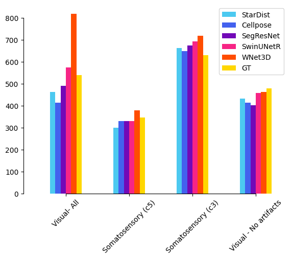
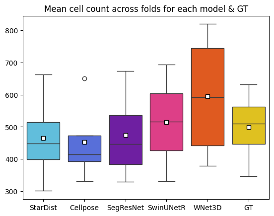
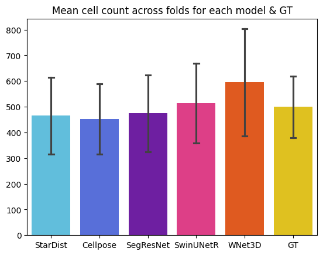
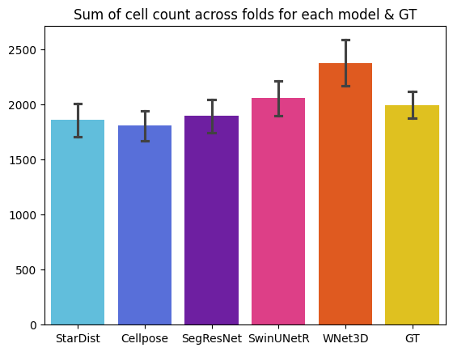
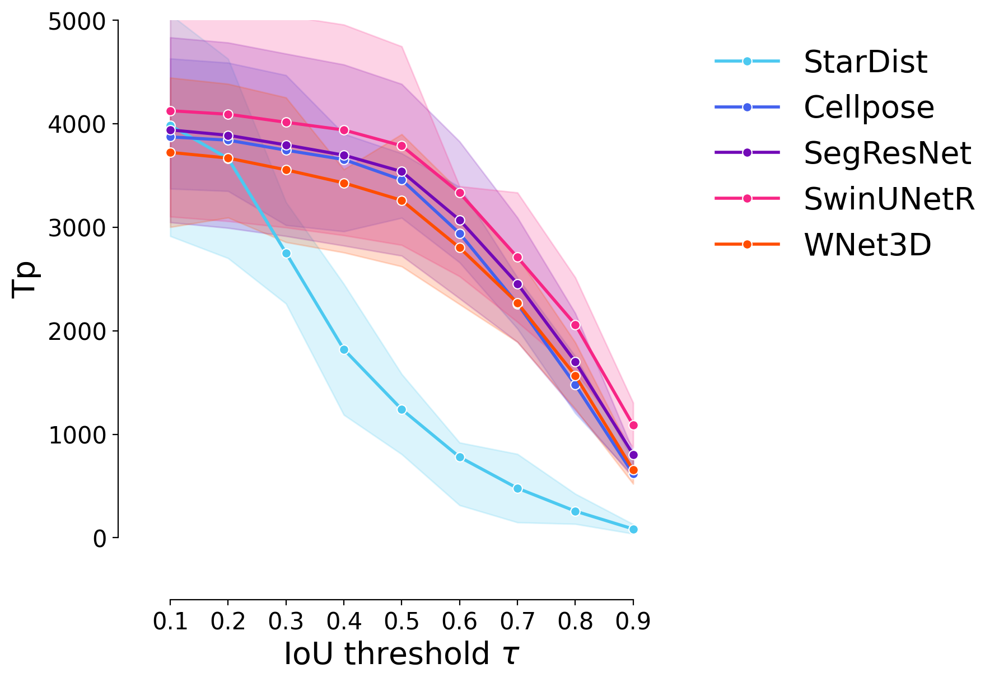

Figure X.x- Cell counts plots#
UNUSED FIGURES - NOT IN PAPER.#
This might be reused in the future if needed.
Goals :
Show cell counts for each model
import numpy as np
from tifffile import imread
import sys
import numpy as np
import pyclesperanto_prototype as cle
from stardist.matching import matching_dataset
sys.path.append("../..")
from utils import *
from plots import *
print("Used GPU: ", cle.get_device())
show_params()
#################
SAVE_PLOTS_AS_PNG = False
SAVE_PLOTS_AS_SVG = True
Warning: Saturation in 0.9508196721311476 is too low or too high in hex color 7209B7
Used GPU: <Intel(R) UHD Graphics 620 on Platform: Intel(R) OpenCL (1 refs)>
Plot parameters (set in plots.py) :
- COLORMAP : ████████
- DPI : 200
- Data path : C:\Users\Cyril\Desktop\Code\CELLSEG_BENCHMARK
- Font size : 20
- Title font size : 25.0
- Label font size : 20.0
%load_ext autoreload
%autoreload 2
Data#
data_path = DATA_PATH / "RESULTS/SUPERVISED_PERF_FIG/INFERENCE"
fold1_path = data_path / "fold1"
fold2_path = data_path / "fold2"
fold3_path = data_path / "fold3"
def get_fold_data(fold_path):
return [imread(f) for f in fold_path.glob("*.tif") if "label" not in f.name], [imread(f) for f in fold_path.glob("*.tif") if "label" in f.name]
images = []
GT_labels = []
for fold in [fold1_path, fold2_path, fold3_path]:
im, GT_lab = get_fold_data(fold)
images.append(im[0])
GT_labels.append(GT_lab[0])
fold_paths = [fold1_path, fold2_path, fold3_path]
def get_predictions(path):
return [imread(f) for f in path.glob("*.tif")]
#################
swin_paths = [f / "Swin" for f in fold_paths]
segresnet_paths = [f / "SegResNet" for f in fold_paths]
#################
cellpose_paths = [f / "Cellpose" for f in fold_paths]
stardist_paths = [f / "starDist" for f in fold_paths]
swin_predictions = [get_predictions(p)[0] for p in swin_paths]
segresnet_predictions = [get_predictions(p)[0] for p in segresnet_paths]
cellpose_predictions = [get_predictions(p)[0] for p in cellpose_paths]
stardist_predictions = [get_predictions(p)[0] for p in stardist_paths]
wnet_path = DATA_PATH / "RESULTS/WNET_RETRAIN/inference/WNet"
wnet_instance = [imread(str(f)) for f in wnet_path.glob("*.tif")]
wnet_instance.reverse()
Computations#
For the choice of thresholds, see notebooks in the thresholds_opti/ folder.
swin_thresholded = [np.where(swin > 0.4, swin, 0) for swin in swin_predictions]
segresnet_thresholded = [np.where(segresnet > 0.3, segresnet, 0) for segresnet in segresnet_predictions]
swin_instance = []
segresnet_instance = []
for i in range(len(fold_paths)):
swin_instance.append(np.array(
cle.voronoi_otsu_labeling(swin_thresholded[i], spot_sigma=0.65, outline_sigma=0.65))
)
segresnet_instance.append(np.array(
cle.voronoi_otsu_labeling(segresnet_thresholded[i], spot_sigma=0.65, outline_sigma=0.65))
)
Plots#
taus = [0.1, 0.2, 0.3, 0.4, 0.5, 0.6, 0.7, 0.8, 0.9]
predictions = [
stardist_predictions,
cellpose_predictions,
segresnet_instance,
swin_instance,
wnet_instance
]
names = [
"StarDist",
"Cellpose",
"SegResNet",
"SwinUNetR",
"WNet3D"
]
model_stats = []
model_ref_name = []
fold_ref = []
for j, fold in enumerate(fold_paths):
print("Fold ", j+1)
for i, p in enumerate(predictions):
print(f"Validating on {names[i]}")
# print(p[j].shape, GT_labels[j].shape)
pred = p[j]
if len(pred.shape) > 3:
pred = pred.squeeze().astype(np.uint32)
stats = [matching_dataset(
GT_labels[j], pred, thresh=t, show_progress=False
) for t in taus]
model_stats.append(stats)
for t in taus:
model_ref_name.append(names[i])
fold_ref.append(j+1)
# uncomment for ALL plots :
# plot_performance(taus, stats, name=names[i])
print("*"*20)
Fold 1
Validating on StarDist
********************
Validating on Cellpose
********************
Validating on SegResNet
********************
Validating on SwinUNetR
********************
Validating on WNet3D
********************
Fold 2
Validating on StarDist
********************
Validating on Cellpose
********************
Validating on SegResNet
********************
Validating on SwinUNetR
********************
Validating on WNet3D
********************
Fold 3
Validating on StarDist
********************
Validating on Cellpose
********************
Validating on SegResNet
********************
Validating on SwinUNetR
********************
Validating on WNet3D
********************
dfs = [dataset_matching_stats_to_df(s) for s in model_stats]
df = pd.concat(dfs)
df["Model"] = model_ref_name
df["Fold"] = fold_ref
df["thresh"] = df.index
df.set_index(["Model", "Fold", "thresh"], inplace=True)
df
| criterion | fp | tp | fn | precision | recall | accuracy | f1 | n_true | n_pred | mean_true_score | mean_matched_score | panoptic_quality | by_image | |||
|---|---|---|---|---|---|---|---|---|---|---|---|---|---|---|---|---|
| Model | Fold | thresh | ||||||||||||||
| StarDist | 1 | 0.1 | iou | 2045 | 2908 | 477 | 0.587119 | 0.859084 | 0.535543 | 0.697529 | 3385 | 4953 | 0.251961 | 0.293290 | 0.204579 | False |
| 0.2 | iou | 2595 | 2358 | 1027 | 0.476075 | 0.696603 | 0.394314 | 0.565603 | 3385 | 4953 | 0.225960 | 0.324375 | 0.183468 | False | ||
| 0.3 | iou | 3656 | 1297 | 2088 | 0.261861 | 0.383161 | 0.184207 | 0.311106 | 3385 | 4953 | 0.148547 | 0.387689 | 0.120612 | False | ||
| 0.4 | iou | 4497 | 456 | 2929 | 0.092065 | 0.134712 | 0.057853 | 0.109379 | 3385 | 4953 | 0.063714 | 0.472966 | 0.051732 | False | ||
| 0.5 | iou | 4826 | 127 | 3258 | 0.025641 | 0.037518 | 0.015467 | 0.030463 | 3385 | 4953 | 0.021498 | 0.573006 | 0.017455 | False | ||
| ... | ... | ... | ... | ... | ... | ... | ... | ... | ... | ... | ... | ... | ... | ... | ... | ... |
| WNet3D | 3 | 0.5 | iou | 974 | 4656 | 2253 | 0.826998 | 0.673904 | 0.590638 | 0.742643 | 6909 | 5630 | 0.518749 | 0.769767 | 0.571662 | False |
| 0.6 | iou | 1640 | 3990 | 2919 | 0.708703 | 0.577508 | 0.466721 | 0.636414 | 6909 | 5630 | 0.467688 | 0.809838 | 0.515393 | False | ||
| 0.7 | iou | 2400 | 3230 | 3679 | 0.573712 | 0.467506 | 0.346976 | 0.515193 | 6909 | 5630 | 0.396466 | 0.848045 | 0.436907 | False | ||
| 0.8 | iou | 3397 | 2233 | 4676 | 0.396625 | 0.323202 | 0.216670 | 0.356169 | 6909 | 5630 | 0.288912 | 0.893907 | 0.318382 | False | ||
| 0.9 | iou | 4704 | 926 | 5983 | 0.164476 | 0.134028 | 0.079738 | 0.147699 | 6909 | 5630 | 0.129802 | 0.968467 | 0.143042 | False |
135 rows × 14 columns
df_supervised = df.copy()
df_supervised = df.loc[["StarDist", "Cellpose", "SegResNet", "SwinUNetR"]]
# evaluate stats for WNet3D on an extra fold, where visual is restricted to [50:, :, :]
stats = [matching_dataset(
GT_labels[0][:50,:,:], wnet_instance[0][:50,:,:], thresh=t, show_progress=False
) for t in taus]
partial_df = dataset_matching_stats_to_df(stats)
partial_df["Model"] = "WNet3D - No artifacts"
partial_df["Fold"] = 1
partial_df["thresh"] = partial_df.index
partial_df.set_index(["Model", "Fold", "thresh"], inplace=True)
df = pd.concat([df, partial_df])
df
| criterion | fp | tp | fn | precision | recall | accuracy | f1 | n_true | n_pred | mean_true_score | mean_matched_score | panoptic_quality | by_image | |||
|---|---|---|---|---|---|---|---|---|---|---|---|---|---|---|---|---|
| Model | Fold | thresh | ||||||||||||||
| StarDist | 1 | 0.1 | iou | 2045 | 2908 | 477 | 0.587119 | 0.859084 | 0.535543 | 0.697529 | 3385 | 4953 | 0.251961 | 0.293290 | 0.204579 | False |
| 0.2 | iou | 2595 | 2358 | 1027 | 0.476075 | 0.696603 | 0.394314 | 0.565603 | 3385 | 4953 | 0.225960 | 0.324375 | 0.183468 | False | ||
| 0.3 | iou | 3656 | 1297 | 2088 | 0.261861 | 0.383161 | 0.184207 | 0.311106 | 3385 | 4953 | 0.148547 | 0.387689 | 0.120612 | False | ||
| 0.4 | iou | 4497 | 456 | 2929 | 0.092065 | 0.134712 | 0.057853 | 0.109379 | 3385 | 4953 | 0.063714 | 0.472966 | 0.051732 | False | ||
| 0.5 | iou | 4826 | 127 | 3258 | 0.025641 | 0.037518 | 0.015467 | 0.030463 | 3385 | 4953 | 0.021498 | 0.573006 | 0.017455 | False | ||
| ... | ... | ... | ... | ... | ... | ... | ... | ... | ... | ... | ... | ... | ... | ... | ... | ... |
| WNet3D - No artifacts | 1 | 0.5 | iou | 376 | 2190 | 854 | 0.853468 | 0.719448 | 0.640351 | 0.780749 | 3044 | 2566 | 0.560445 | 0.778992 | 0.608197 | False |
| 0.6 | iou | 660 | 1906 | 1138 | 0.742790 | 0.626150 | 0.514579 | 0.679501 | 3044 | 2566 | 0.510604 | 0.815466 | 0.554110 | False | ||
| 0.7 | iou | 1012 | 1554 | 1490 | 0.605612 | 0.510512 | 0.383136 | 0.554011 | 3044 | 2566 | 0.435460 | 0.852986 | 0.472564 | False | ||
| 0.8 | iou | 1463 | 1103 | 1941 | 0.429852 | 0.362352 | 0.244730 | 0.393226 | 3044 | 2566 | 0.324968 | 0.896830 | 0.352657 | False | ||
| 0.9 | iou | 2071 | 495 | 2549 | 0.192907 | 0.162615 | 0.096774 | 0.176471 | 3044 | 2566 | 0.156949 | 0.965155 | 0.170321 | False |
144 rows × 14 columns
cell_counts = {}
for i, p in enumerate(predictions):
cell_counts[names[i]] = []
for j, pred in enumerate(p):
cell_counts[names[i]].append(len(np.unique(pred)) - 1)
gt_cell_counts = []
for gt in GT_labels:
gt_cell_counts.append(len(np.unique(gt)) - 1)
# also count cells on an extra fold - visual @ [125:, :, :]
# load first fold only
fold_4_gt = GT_labels[0][:50,:,:]
# iterate over models
for i, p in enumerate(predictions):
fold_4_pred = p[0][:50:,:,:]
cell_counts[names[i]].append(len(np.unique(fold_4_pred)) - 1)
cell_counts["GT"] = gt_cell_counts
cell_counts["GT"].append(len(np.unique(fold_4_gt)) - 1)
cell_counts_df = pd.DataFrame(cell_counts)
cell_counts_df
| StarDist | Cellpose | SegResNet | SwinUNetR | WNet3D | GT | |
|---|---|---|---|---|---|---|
| 0 | 464 | 414 | 490 | 575 | 819 | 540 |
| 1 | 301 | 331 | 330 | 331 | 379 | 347 |
| 2 | 663 | 650 | 674 | 693 | 719 | 631 |
| 3 | 432 | 414 | 402 | 458 | 463 | 480 |
# make a barplot that show gt and models cell counts for each fold
with get_style_context():
cell_counts_df.plot(kind="bar") #, colormap=COLORMAP)
plt.xticks(np.arange(4), ["Visual- All", "Somatosensory (c5)", "Somatosensory (c3)", "Visual - No artifacts"])
sns.despine(
left=False,
right=True,
bottom=False,
top=True,
trim=True,
offset={"bottom": 0, "left": 15},
)
plt.xticks(rotation=45)

cell_counts_df.mean()
StarDist 465.00
Cellpose 452.25
SegResNet 474.00
SwinUNetR 514.25
WNet3D 595.00
GT 499.50
dtype: float64
# show average across folds
with get_style_context():
sns.boxplot(
data=cell_counts_df,
showmeans=True,
meanprops={"marker":"s","markerfacecolor":"white", "markeredgecolor":"black"}
)
plt.title("Mean cell count across folds for each model & GT")

# show average across folds
with get_style_context():
sns.barplot(data=cell_counts_df, estimator=np.mean, errorbar="sd", capsize=0.1)
plt.title("Mean cell count across folds for each model & GT")

# show sum across folds
with get_style_context():
sns.barplot(data=cell_counts_df, estimator=sum, errorbar="sd", capsize=0.1)
plt.title("Sum of cell count across folds for each model & GT")

plot_stat_comparison_fold(df[df.index.get_level_values(0) != "WNet3D - No artifacts"], stat="tp", ylims=(0, 5000))
